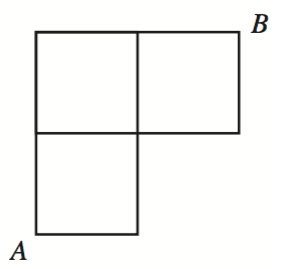
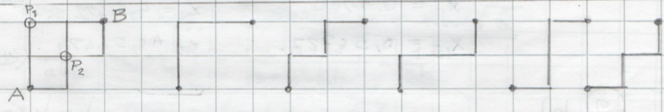

13. Sannolikheter
Inledande uppgifter
- Uppgift
- Deluppgit a
Lösningen
- Deluppgit b
Lösningen
- Deluppgit c
Lösningen
- Deluppgit a
- Uppgift
- Deluppgit a
Lösningen
- Deluppgit b
Lösningen
- Deluppgit c
Lösningen
- Deluppgit a
- Uppgift
Lösningen
- Uppgift
Lösningen
- Lite mera krävande uppgift
Lösningen
- exakt den ena kvinnan blir utlottad,
- båda kvinnorna blir utlottade.
- högst två
- åtminstone en
- I ett lotteri som arrangerades i förmån för en lägerskola meddelades att var 20:de lott vinner. Hur många lotter bör man köpa om man vill vinna ett pris med sannolikheten 50 %? [V04,9]
minst 14 st
- På en persons väg till arbete finns det tre trafikljus som fungerar oberoende av varandra. De visar 30 %, 40% och 20% av tiden grönt för personen. Bestäm sannolikheten att personen hamnar stanna upp i trafikljus högst en gång. [H07, 8]
21,2 %
- I ett spel kastas en tärning tre gånger. Om resultatet i första kastet inte förekommer en gång till förlorar spelaren 10 €. Om resultatet i första kastet förekommer exakt en gång till vinner spelaren 20 € och om resultatet i första kastet förekommer i de båda återstående kasten vinner spelaren 50 €. Bestäm sannolikheten för spelarens vinst och beräkna vinstens väntevärde.
P(-10) = \( \dfrac{25}{36} \) , P(20)=\( \dfrac{10}{36} \) och P(50) = \( \dfrac{1}{36} \).
Väntevärdet är 0 €.
Figuren nedan visar gatnätet i en liten stad. Anders går från punkt A till punkt B genom att använda kortaste möliga rutt, varvid sträckan är fyra kvarterslängder lång. I korsningar där två alternativ leder till den kortaste rutten väljer han rutt genom att singla slant. [H16, 8]

- Rita separata figurer för alla fem möjliga rutter som är fyra kvarterslängder långa, och bestäm sannolikheterna för att de ska bli valda.
De olika rutterna är
 (1 poäng)
Rutternas sannolikheter är (sett från vänster)
- \( \dfrac{1}{2} \cdot \dfrac{1}{2} \cdot 1 \cdot 1 = \dfrac{1}{4} \),
- \( \dfrac{1}{2} \cdot\dfrac{1}{2} \cdot\dfrac{1}{2} \cdot 1 = \dfrac{1}{8} \),
- \( \dfrac{1}{2} \cdot\dfrac{1}{2} \cdot\dfrac{1}{2} \cdot 1 = \dfrac{1}{8} \),
- \( \dfrac{1}{2} \cdot 1 \cdot\dfrac{1}{2} \cdot 1 = \dfrac{1}{4} \) och
- \( \dfrac{1}{2} \cdot 1 \cdot 1 \cdot 1 = \dfrac{1}{2} \) (2 poäng)
- Birgitta går från punkt B till punkt A och väljer kortaste möjliga rutt på motsvarande sätt. Anders och Birgitta startar samtidigt och går med samma fart. Med hur stor sannolikhet möter de varandra halvvägs?
Möjliga mötesplatser är punkterna \( P_1 \) och \( P_2 \). (1 poäng)
Sannolikheten att mötas i punkten \( P_1 \) är \( p_1 = (\dfrac{1}{2} \cdot \dfrac{1}{2}) (\dfrac{1}{2} \cdot\dfrac{1}{2}) = \dfrac{1}{16} \).
Sannolikheten att mötas i punkten \( P_2 \) är \( p_2 = (\dfrac{1}{2} \cdot \dfrac{1}{2}+\dfrac{1}{2} \cdot 1) (\dfrac{1}{2} \cdot\dfrac{1}{2}+\dfrac{1}{2} \cdot 1) = \dfrac{9}{16} \). (1 poäng)
Den efterfrågade sannolikheten är \( p_1 + p_2 = \dfrac{1}{16}+\dfrac{9}{16} = \dfrac{5}{8} \). (1 poäng)
- Rita separata figurer för alla fem möjliga rutter som är fyra kvarterslängder långa, och bestäm sannolikheterna för att de ska bli valda.
- De reella talen \( a \) och \( b \) bestäms slumpmässigt från intervallet [0,3]. Bestäm sannolikheten att \( \log_{10}(2a+3b)>1. \). [V02, 9]
Vi utnyttjar geometrisk sannolikhet.
\( \dfrac{25}{108} \)
Utan räknare
Ett spel spelas av tre lika skickliga spelare A, B och C. Var och en får en poäng för en seger och slutgiltig vinnare är den spelare, som först får tre poäng. A vinner i det första spelet, B i det andra och tredje. Vad är sannolikheten att C skall vara den slutgiltiga vinnaren? [V94, 5]
Teknologföreningens styrelse består av åtta personer, av vilka två är kvinnor. Fem styrelsemedlemmar utlottas att representera föreningen vid Hankens årsfest. Beräkna sannolikheten att
Antag att av invånarna i Helsingfors har 6 % svenska som modersmål. Beräkna sannolikheten att av femtio godtyckligt valda helsingforsare
Ekvationen \( x^2+px+q=0 \) är given. Koefficienterna \( p \) och \( q \) är två reella tal vilka båda på måfå väljs ur intervallet [0,1]. Beräkna sannolikheten att ekvationen har reella rötter.